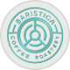
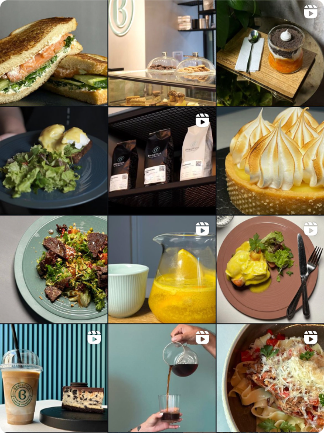
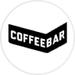

Охват кофейни
280 327 за 3 месяца
Baristica Shop — кофейня и обжарка кофе в центре Баку. Соцсети вёл сам: Reels, фото- и видеосъёмки, новый стиль сторис.
- Баку, Азербайджан
- 2024
- Вёл соцсети сам

Baristica ShopСтатистика Instagram · 3 месяцаПоказы профиля выросли в 6,3 раза: до 743 496.

Лента Baristica ShopЧто я делал
Вёл соцсети сам. За 3 месяца профиль кофейни получил регулярный контент и новый стиль сторис.
- 24публикации за 3 месяца
- 19из них — Reels
- 10+фото- и видеосъёмок
- 1новый стиль сторис
Атмосфера, меню и люди: фото и Reels выходили в рекомендации и приводили гостей офлайн.
19 из 24
публикаций — Reels
Короткие ролики показывают людям, которые ещё не подписаны. Поэтому основной упор — на Reels, а фото и сторис держат тех, кто уже пришёл.

Контент, ради которого приходят в кофейню
Фото и Reels выходили в рекомендации и приводили гостей офлайн.
Атмосфера
Показываем место так, чтобы захотелось зайти и остаться.
Меню
Напитки и еда крупно — чтобы захотелось попробовать.
Люди
Бариста и гости в кадре: у кофейни появляется лицо.
Кейс в одной таблице
Всё главное о проекте — для тех, кто листает быстро.
- Клиент
- Baristica Shop
- Ниша
- Кофейня и обжарка кофе
- Город
- Баку, центр
- Год
- 2024
- Срок
- 3 месяца
- Роль
- Вёл соцсети сам
- Итог
- Охват 280 327, показы профиля +534%, +566 подписчиков
Охват — только начало. Смотрите, сколько людей после ролика открыли профиль: здесь показы профиля выросли на 534%.
Разобрать мой профильДругие кейсы
Похожие задачи в других нишах. Цифры клиентов — с их разрешения.

CoffeebarБаку · кофейня · 2026SMM-специалист в команде проекта
ПодробнееОхват профиля 21 021 и +375 подписчиков
ПодробнееВсе места на Формулу-1 за полдня
ПодробнееНужен SMM, который даёт заявки?
Напишите — разберу ваш профиль и скажу, где теряются клиенты.
Что будет дальше
- 01Вы пишетеПара слов о бизнесе и ссылка на профиль
- 02Я разбираю профильПоказываю, где теряются клиенты
- 03Бриф и созвонБесплатно. После созвона называю цену работы